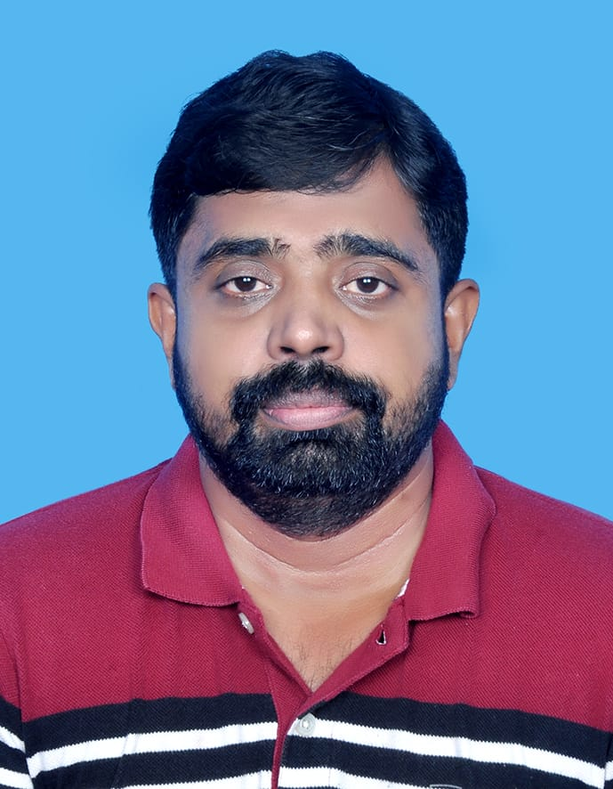

About

I'am Dr Saleej
Physical Educations TrainerI m Assistant professor MES Kaladi College Mannarkkad
Area: Physical Education
Qualification: PhD, Mphil, MPEd, JRF
Work Experience
Teaching Experience
Worked as an assistant professor in Physical Education in MES Kalladi College Mannarkkad from July 1st 2019 to March 31st 2020
- Calicut university wrestling team manager for all India inter university tournaments
- Preparation of players for participating state level to international level
- Sub convener of Zonal and Inter Zonal Tournaments Under Calicut University
- Selection Committee Member of Calicut University Basketball
- Criterion member of NAAC Visit
Full Time Research Scholar, Department of Physical Education 2014-2019 As a Full Time Research scholar attached with Department of Physical Education
- Handled different subjects for the different course in Centre for Physical Education, University of Calicut from academic year 2014-15 to 2017-18 Subject Handled
- Educational Technology and methods of Teaching
- Research and statistics in Physical education
- Teaching Methods in Physical Education • Olympic Movement
- Management of Physical Education and Sports
- Sports Psychology and sociology
Working as an Assistant Professor in Physical Education in MES College of Engineering Kuttippuram from June 1st 2012 to
March 31St 2014
- Sub convener of Zonal and Inter Zonal Tournaments under Calicut University
- Selection Committee Member of Calicut University Basketball
- Acted as a Discipline Committee Member of College Technical Fest
Research Area
Physical Education, Sports Psychology and Social Science Research0
Conference proceedings publication
international conference proceedings two
Paper presented National/International
- National Conference 4
- International Conference 3
Conference/Saminars/Telks/Symposiums Attended
Paper presentations
- Presented a paper titled ‘Effect of surya namaskar on body flexibility and muscular efficiency among sports person’ in
the two day UGC sponsored National seminar on ‘Ayurveda and Yoga on Sports training and Performance’ organised by
Department of Physical Education EMEA College of arts and Science Kondotty in collaboration with VPSP Ayurveda Kottakkal
on 8th to 9th March 2011
- Presented a paper titled ‘Performance profiling and goal setting ’ in the three day National Conference on ‘Health and
Physical Education and Sports ’ organised by University College of Physical E under the auspices of NAPESS from 4th to
6th April 2009
- Presented a paper titled ‘Exercise tips for Hypo kinetic diseases’ in the two day UGC sponsored National seminar on
‘Health and Fitness well-being and Physical Education’ organized by Department of Physical Education EMEA University of
Calicut 11th to 12th March 2009
National seminar
- Participated in the three day national seminar on ‘Rethinking Pedagogy & Curriculum in Psychology’ organized by
Department of Psychology ,University of Calicut on 11th to 13th February 2019
- Participated in the two day UGC sponsored National seminar on ‘Sports Medicine’ organised by Department of Physical
Education Sullamussalam Science College Areekod in collaboration with Daisman Ayurveda Kondotty on 28th February to 1st
march 2011
International workshop
- Participated as a student Delegate in the one day international workshop organized by Kerala Economic association and
the Department of Economics, St.Xavier College for women Aluva on the topic „Academic writing in the digital environment
:A New Perspective‟ on 1 st August 2016.
National workshop
National workshop
- Participated in the National Workshop on ‘How to Carry out Scientific Research in Social sciences’ Organized by the
Department Research Forum, Department of Commerce and management Studies, School of Business studies, University of
Calicut on 1 st to 2nd November 2017
- Participated in the Three day National Workshop on ‘How to Avoid Plagiarism’ Organised by the Department of Library and
Information Science University of Calicut During 23rd to 25th March 2017
- Participated in the One day National Workshop on ‘Anti-Doping Awareness’ Organised by the Department of Physical
Education University of Calicut on 23rd March 2016
- Participated as a student delegate in the ‘National workshop on Volleyball’ organized by Department of Physical
Education and Health Sciences , Algappa University ,Karaikudi on 7th March 2009 held at AUCPE Gymnasium
- Participated as a student delegate in the National workshop on ‘Review of Curriculum Contents of BPEd Course in the
Universities of Karnataka ‘on 17th to19th April 2007’organized by University College of Physical education Bangalore
University Bangalore’
Other Professional Appointments
National level organization
- Act as an organizing committee member of ‘All India Inter University Netball (Men) Championship‟ held at University of Calicut from 6/3/2020 to 9/03/2020
- Act as a Medical Committee Convener in the ‘All India Inter University Softball (Women) Championship‟ held at University of Calicut from 2/03/2019 to 6/03/2019
- Act as a Medical Committee Convener in the ‘All India Inter University Weight Lifting (Men) Championship‟ held at PT Usha Indoor Stadium, University of Calicut.17/09/2108 to 20/09/2018
- Act as a Medical Committee Convener in the ‘South India and All India Inter University Football (Men) Championship 2016-17‟ held at CH Muhammed Koya Stadium, University of Calicut from 21/12/2017 December to 05/01/2018 January 5. Act as a Sub Convener in the ‘South India Inter University Volleyball (Women) Championship 2016-17‟ held at PT Usha Indoor stadium, University of Calicut from 24th to 28th December2016
- Act as a Sub Convener in the ‘South India Inter University Basketball (Women) Championship 2016-17‟ held at PT Usha indoor stadium, University of Calicut from 10th to 14th December20163
- Act as a Convener of accommodation committee in ‘Al Abeer Educity 13th National Youth Athletic Championship‟ held at CH Muhammed koya stadium organized by Malappuram district athletic association from 26th to 28th May 2016 8. Act as a Venue assistant Manager(Pool D) in the ‘South India Inter University Football(Men) Championship 2016-17‟ held at PT Usha Indoor stadium, University of Calicut from 13th to 22nd December2014
Awards
- JRF in Physical Education
Significant Publication
- International Journal Publication 5
Publication in books
Book Chapter Publication
- Authored a book chapter Titled ‘Performance Profiling in Sports Psychology’ In the book of ‘Research Trends in Physical education and Yoga’ Volume- 3 Edited by Dr.Deba Prasad Sahu with ISBN: paperback 978-93-5335-358-2,E-Book ISBN: 978-93-5335-359-9 By AkiNik Publication 2019
Publication in Journals
- Published a paper in Journal of Emerging Technologies and Innovative Research Published In JETIR ( www.JETIR.org ) ISSN UGC Approved (Journal No: 63975) & 5.87 Impact Factor Entitled ‘Study on mental toughness and Imagery among soccer player’ Volume No 6 Issue 6 (ISSN2349-5162)Pages 958-963 June 2019
- Published a paper in ‘Shanlax International Journal of Arts ,Science and Humanities’ A peer-refereed Scholarly quarterly Journal globally indexed with impact factor of 3.025’ Entitled ‘A study on mental Toughness and Imagery among south Indian Santosh trophy Football Players’ Volume No 8 Special Issue 2 ISSN:2321-788X Pages 1-5 February 2019
- Published a paper in ‘International Journal of Physical education, sports and Health’ A peer-Reviewed Journal, referred Journal and indexed with impact factor of 5.38’ Entitled ‘Analysis of B.P.Ed curriculum in the Universities of Southern India’ Volume No 6 Issue 1 ISSN online: 2394- 1693 Print ISSN 2394-1685 Pages 140-142 2019
- Published a paper in ‘International Journal of Physiology, Nutrition and Physical Education A peer-Reviewed Journal, referred Journal and indexed with impact factor of 5.43’ Entitled ‘Psychological Performance Profiling among rural area Cricket Players’ Volume No 3 Issue 2 ISSN : 2456-0057 Pages 792-793 July 2019
- Published a paper in ‘International Journal of Physical Education Fitness Sports Entitled ‘Study on Programmes Facilities and Achievement in USHA School of Athletics’ Volume 4 Issue 2 ISSN online: 2277:5447 Pages 38-45 June 2015
Publication in Journals
- Published a paper in Journal of Emerging Technologies and Innovative Research Published In JETIR ( www.JETIR.org ) ISSN UGC Approved (Journal No: 63975) & 5.87 Impact Factor Entitled ‘Study on mental toughness and Imagery among soccer player’ Volume No 6 Issue 6 (ISSN2349-5162)Pages 958-963 June 2019
- Published a paper in ‘Shanlax International Journal of Arts ,Science and Humanities’ A peer-refereed Scholarly quarterly Journal globally indexed with impact factor of 3.025’ Entitled ‘A study on mental Toughness and Imagery among south Indian Santosh trophy Football Players’ Volume No 8 Special Issue 2 ISSN:2321-788X Pages 1-5 February 2019
- Published a paper in ‘International Journal of Physical education, sports and Health’ A peer-Reviewed Journal, referred Journal and indexed with impact factor of 5.38’ Entitled ‘Analysis of B.P.Ed curriculum in the Universities of Southern India’ Volume No 6 Issue 1 ISSN online: 2394- 1693 Print ISSN 2394-1685 Pages 140-142 2019
- Published a paper in ‘International Journal of Physiology, Nutrition and Physical Education A peer-Reviewed Journal, referred Journal and indexed with impact factor of 5.43’ Entitled ‘Psychological Performance Profiling among rural area Cricket Players’ Volume No 3 Issue 2 ISSN : 2456-0057 Pages 792-793 July 2019
- Published a paper in ‘International Journal of Physical Education Fitness Sports Entitled ‘Study on Programmes Facilities and Achievement in USHA School of Athletics’ Volume 4 Issue 2 ISSN online: 2277:5447 Pages 38-45 June 2015
Proceedings Publications
International conference
- Presented a paper entitled ‘Performance profiling of soccer players with special references to strikers’ in the international conference on ‘A Glimpse into the Future of Sports and Allied Sciences Sectors’ Jointly organized by the department of physical education, MES College Marampally, Aluva, Ernakulam and CHMKM Govt. Arts and Science College Tanur, Kerala in Collaboration with Langford College,Ierland and FA Innovations, United Kingdom from 27 to 29 October 2020
- Presented a paper entitled “A study on Mental Toughness and Imagery among South Indian Santosh Trophy football players” in three-day Multidisciplinary World Summit on ‘Recourse Management and Sustainable Development’ Jointly organized by University of Mysore, UG and PG department of Studies in Economics. Maharani Arts College for Women, James Cook University Singapore and International Council for Development research Mysore on 22nd to 24th February 2019 at Senate Bhavan, Mysore University
- Presented a paper entitled ‘Exercise Prescription for Hypo kinetic Diseases’ in the international Conference on Emerging trends in Fitness for Longevity and Education for Empowerment (INCOFLEE-09) Held on March 5th to 6th 2009 organized by School of education and Physical education, Alagappa University Karaikudi Tamilnadu.
Membership in Personal Bodies
Membership
- Life member of ‘National Association of Physical education and sports science’ (NAPESS) Affiliated to „International Council of Sports sciences & Physical Education’(ICSSPE) 2020
- Review board member 1. Review board member of Journal of Emerging Technologies and Innovative Research from 2019 onwards
Academic Positions
Worked as an assistant professor in Physical Education in MES Kalladi College Mannarkkad from July 1st 2019 to March 31st 2020
- Calicut university wrestling team manager for all India inter university tournaments
- Preparation of players for participating state level to international level
- Sub convener of Zonal and Inter Zonal Tournaments Under Calicut University
- Selection Committee Member of Calicut University Basketball
- Criterion member of NAAC Visit
Full Time Research Scholar, Department of Physical Education 2014-2019 As a Full Time Research scholar attached with Department of Physical Education
Handled different subjects for the different course in Centre for Physical Education, University of Calicut from academic year 2014-15 to 2017-18 Subject Handled
- Educational Technology and methods of Teaching
- Research and statistics in Physical education
- Teaching Methods in Physical Education
- Olympic Movement
- Management of Physical Education and Sports
- Sports Psychology and sociology
Working as an Assistant Professor in Physical Education in MES College of Engineering Kuttippuram from June 1st 2012 to March 31St 2014
- Sub convener of Zonal and Inter Zonal Tournaments under Calicut University
- Selection Committee Member of Calicut University Basketball, Volleyball
- Acted as a Discipline Committee Member of College Technical Fest
Radio Programmes
- Attended a radio interview programme related on „Sports Psychology and Performance profiling’ at Manjeri FM Yuvavani Programme on Saturday, YLU04, ,0202MA 42062:8
Short term course
- Participated in the ‘Six Days Short Term Course on research methodology in Social Science for PhD Scholars’ conducted by the UGC-Human resource development Centre from 09/012017 to 14/01/2017 and successfully complete the course sponsored by University Grants Commission.
- Participated in ‘Hands on Training on statistical data analysis for Researchers and Students’ organized by Tropical Institute of Ecological sciences affiliated to Mahatma Gandhi University Kottayam during 18th to 20th May 2017
Online Course
- Completed and awarded Silver Medal the Three Month Certificate Course on Research Methodology (CCRM) with the topic of ‘A Study on Selected Psychological Performance Profiling among Calicut University players’ in the student category conducted from July 2017 to September 2017 by the Alexis Foundation through online Mode